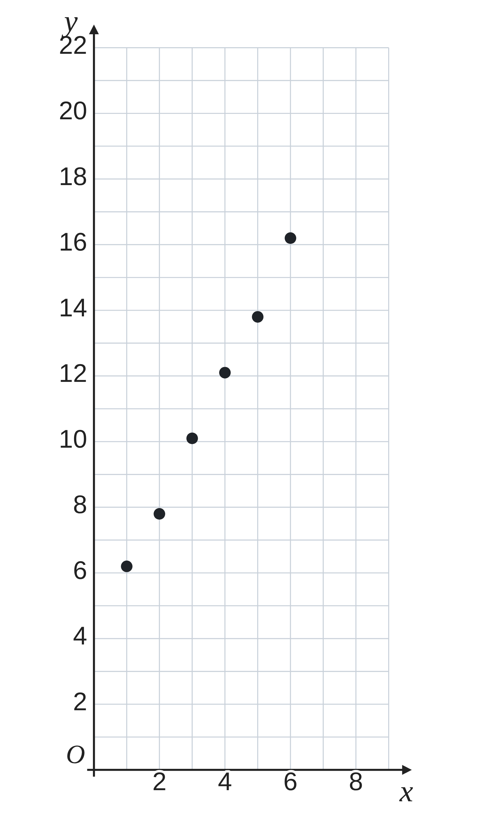
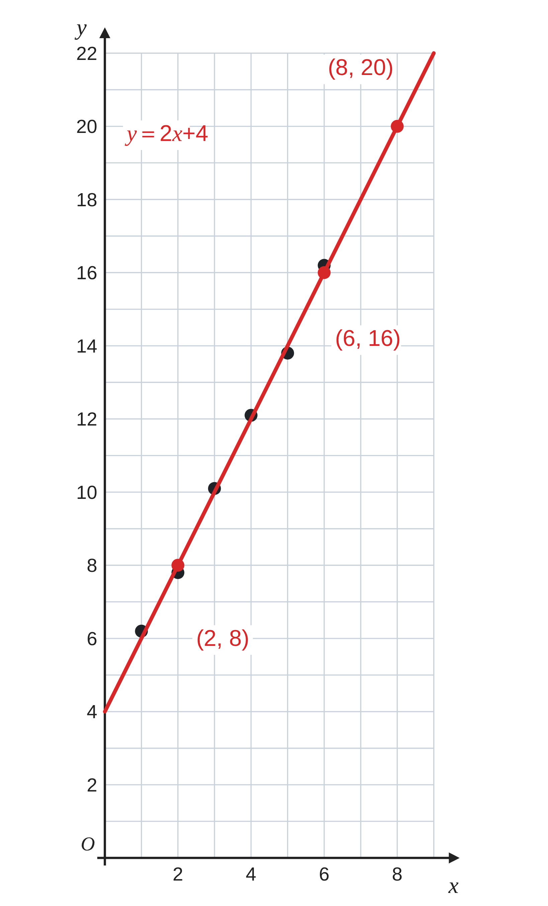
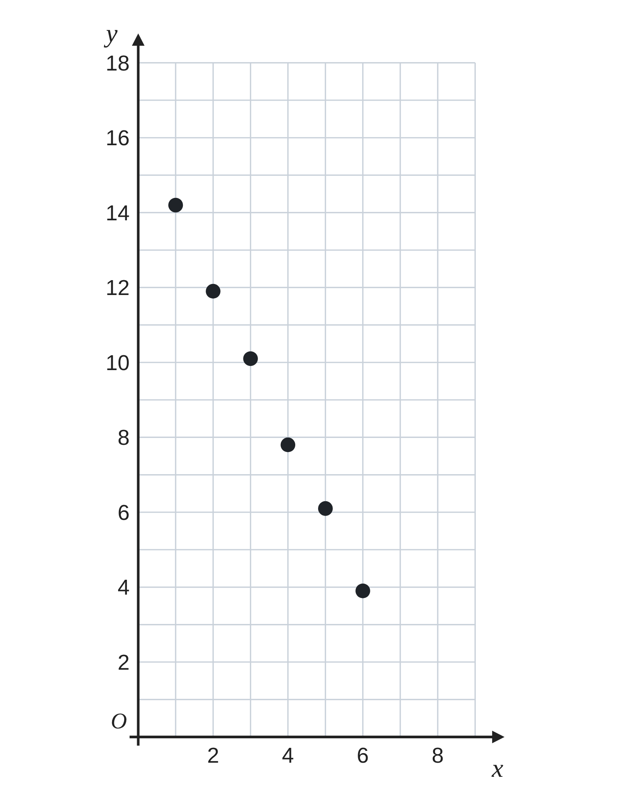
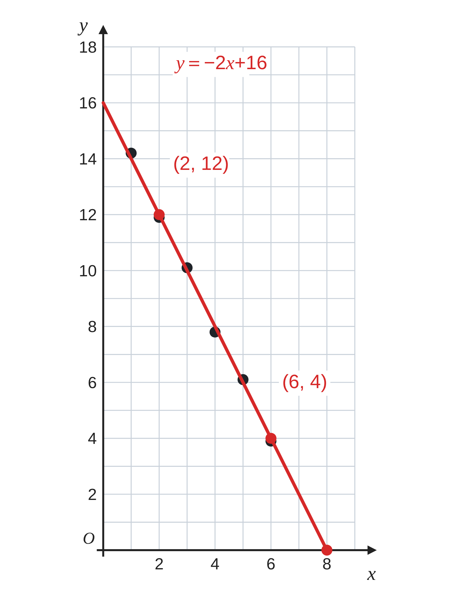

ペア学習
第14時 実験の結果を一次関数とみなして、予測しよう
第13時の重要語句から、1人1問ずつ、言葉を選んで出題する。
聞かれた人は、その言葉の意味を、自分の言葉で言う。
連立方程式の解
2直線の交点
交点の座標
平行
一次関数 第14時 実験の結果を一次関数とみなして、予測しよう
めあて
第14時 実験の結果を一次関数とみなして、予測しよう
学習課題
ばねに、同じおもりを x個つるしたときの、
ばねの長さ y cm を調べた。
おもりを 8個つるしたときの長さを、はかる前に予測しよう。
| x（個） | 1 | 2 | 3 | 4 | 5 | 6 |
|---|---|---|---|---|---|---|
| y（cm） | 6.2 | 7.8 | 10.1 | 12.1 | 13.8 | 16.2 |

【式】点の近くを通る直線を図にひき、式を求めよう。 【予測】8個のときの長さは？
一次関数 第14時 実験の結果を一次関数とみなして、予測しよう
学習課題のまとめ
第14時 実験の結果を一次関数とみなして、予測しよう
ばねの実験。おもり 8個のときの長さを、予測しよう。
点は、ほぼ一直線上にならぶ → 一次関数とみなす
直線が通る (2, 8)、(6, 16) から
傾き＝(16−8)⁄(6−2)＝2
8＝2×2+b b＝4
y＝2x+4
x＝8 のとき y＝2×8+4＝20 およそ 20cm
（直線の引き方で、式は少しちがってよい）

一次関数 第14時 実験の結果を一次関数とみなして、予測しよう
ことば
第14時 実験の結果を一次関数とみなして、予測しよう
調べた点が、ほぼ一直線上にならぶとき、
と ことができる。
点の近くを通る直線の式を使って、
調べていない値を求めることを という。
式は、直線が通る を 2つ選んで求める。
一次関数 第14時 実験の結果を一次関数とみなして、予測しよう
ことば
第14時 実験の結果を一次関数とみなして、予測しよう
調べた点が、ほぼ一直線上にならぶとき、
一次関数とみなすことができる。
点の近くを通る直線の式を使って、
調べていない値を求めることを予測という。
式は、直線が通る整数の点を 2つ選んで求める。
一次関数 第14時 実験の結果を一次関数とみなして、予測しよう
例題
第14時 実験の結果を一次関数とみなして、予測しよう
ろうそくに火をつけて、 時間ごとに長さを調べた。
火をつけてから x時間後の長さを y cm とする。
燃えつきる（y＝ ）のは、何時間後と予測できるか。
| x（時間） | 1 | 2 | 3 | 4 | 5 | 6 |
|---|---|---|---|---|---|---|
| y（cm） | 11.9 | 7.8 | 3.9 |

一次関数 第14時 実験の結果を一次関数とみなして、予測しよう
例題 解答
第14時 実験の結果を一次関数とみなして、予測しよう
| x（時間） | 1 | 2 | 3 | 4 | 5 | 6 |
|---|---|---|---|---|---|---|
| y（cm） | 14.2 | 11.9 | 10.1 | 7.8 | 6.1 | 3.9 |
点は、ほぼ一直線上にならぶ → 一次関数とみなす
直線が通る (2, 12)、(6, 4) から
傾き＝(4−12)⁄(6−2)＝−2 12＝−2×2+b b＝16
y＝−2x+16
y＝0 のとき 0＝−2x+16 x＝8 8時間後

一次関数 第14時 実験の結果を一次関数とみなして、予測しよう
考えよう
第14時 実験の結果を一次関数とみなして、予測しよう
①
x の値を式に入れて、y の値を求めよう。
信じてよいと思うものに ○、
信じにくいと思うものに △ をつけよう。
| x（個） | 7 | 10 | 20 | 50 | 100 |
|---|---|---|---|---|---|
| y（cm） | |||||
| 信じてよいか（○・△） |
②
○と△をつけた
わけを書こう。
③
信じてよい x の範囲を、
自分で決めよう。
決めたわけも書こう。
発展
演習まで解き終わった人は、考えてみよう！ A さんは (2, 8)、(6, 16) を通る直線をひいた。B さんは (1, 6.2)、(5, 13.8) を通る直線をひいた。B さんの式を求め、x＝8 のときと x＝50 のときの予測が、A さんとどれだけちがうか調べよう。
一次関数 第14時 実験の結果を一次関数とみなして、予測しよう
振り返り
第14時 実験の結果を一次関数とみなして、予測しよう
今日のめあて
一次関数とみなす
予測
今日わかったことを、ペアで1つずつ言い合おう。
ワークシートと演習プリントを出そう。（未完成でも出す）
一次関数 第14時 実験の結果を一次関数とみなして、予測しよう